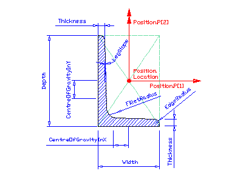
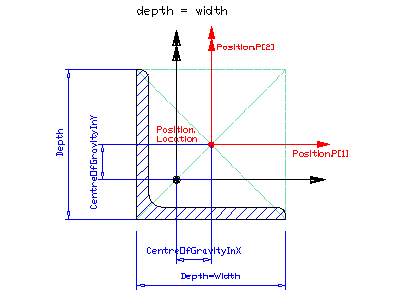

|

|
Position
The parameterized profile defines its own position coordinate system.
The underlying coordinate system is defined by the swept area solid
that uses the profile definition. It is the xy plane of:
- IfcSweptAreaSolid.Position
by using offsets of the position location, the parameterized profile
can be positioned centric (using x,y offsets = 0.), or at any position
relative to the profile.
In the illustrated example, the 'CentreOfGravityInX' and 'CentreOfGravityInY' properties in IfcExtendedProfileProperties, if provided, are both negative.
|
|

Note:
The black coordinate axes show the
underlying coordinate system of the swept surface or swept area solid
|
Position
The profile is inserted into the underlying
coordinate system of the swept area solid by using the Position
attribute. In this example (cardinal point of gravity) the
attribute values of IfcAxis2Placement2D
are:
Location = IfcCartesianPoint(
+|CentreOfGravityInX|,
+|CentreOfGravityInY|)
RefDirection = NIL (defaults to 1.,0.)
In the illustrated example, the x and y value of Position.Location, i.e. the measures |CentreOfGravityInX| and |CentreOfGravityInY| are both positive. On the other hand, the properties named 'CentreOfGravityInX' and 'CentreOfGravityInY' in IfcExtendedProfileProperties, if provided, must both be set to 0 now because the centre of gravity of the resulting profile definition is located in the coordinate origin.
|
 EXPRESS-G diagram
EXPRESS-G diagram Link to this page
Link to this page